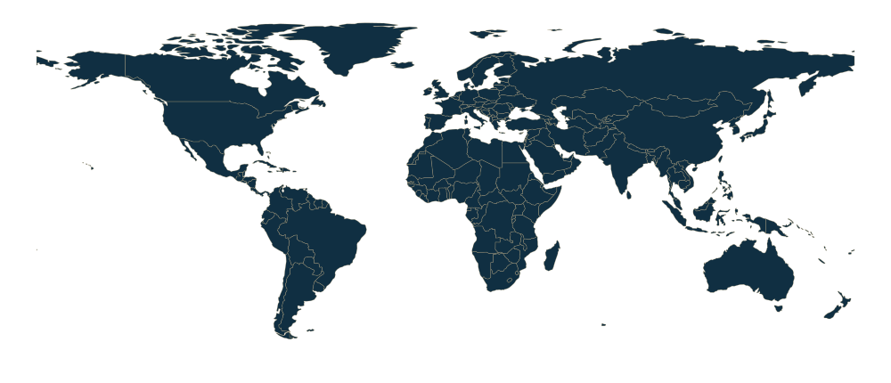

01 / Educate
Start with shared understanding.
Give leaders and teams a practical understanding of the technology, its possibilities and its limits.

Nitesh Chawda / A career in making change happen
I connect strategy, people and emerging technology — turning big questions into practical change and lasting value.
Career-wide programme outcomes and experience, including contributions within broader teams.
Perspective across borders
Different markets. Different challenges. The same focus on bringing people, strategy and technology together to create lasting value.

Selected clients
Selected engagements across Australia
Locations represent selected engagement experience, rather than company headquarters. Europe is shown as a regional engagement.
Made with Natural EarthA career shaped by exceptional organisations
Employment, contracted work, consulting experience and education are labelled individually. Logos identify these relationships; they do not imply endorsement.
01 / The thread through it all
My career has moved from investment banking and M&A to enterprise transformation, board leadership and emerging technology. The question has stayed the same: how do we turn an idea into value that lasts?
02 / My approach
I’ve made my approach repeatable: build understanding, enable people, tackle the big rocks and prove the economics. Then build only what the evidence supports. Hover, tap or use the arrow keys to follow the roadmap.
01 / Educate
Give leaders and teams a practical understanding of the technology, its possibilities and its limits.
02 / Enable
Connect the learning to real roles, tools, workflows and safe-use guidance.
03 / Big rocks
Identify the constraints that matter, then turn each into smaller, testable opportunities.
04 / Business case
Test full costs, adoption, risk, time to value and sustained returns before committing.
05 / Scope & prove
Select one area and test feasibility, adoption and economics against a clear baseline.
06 / Build
Combine the working solution with its controls, support and operating model.
07 / Expand
Take proven components into adjacent teams, checking the value in each new context.
08 / Scale
Embed ownership, governance and benefits tracking so the returns endure.
03 / My journey
More than a decade of evolution, with study and practice moving together.
The full storyMacquarie scholarship
A Macquarie investment-banking scholarship, before VCE, opened the door to finance and set the direction for my studies in commerce and law.
Macquarie · Bond · Deloitte · Herbert Smith Freehills
Investment-banking development, commerce and law studies, then an M&A analyst role at Deloitte at 21. The foundation was always commercial: understand the decision before building the model.
Accenture Strategy · Harvard University
Strategy and transformation work across industries, alongside an ALM in Management at Harvard. I completed the degree while continuing to work at Accenture Strategy.
ISG · Industry strategy · Accenture practice leadership
Operating-model design, enterprise transformation and private-equity diligence brought the business case closer to the people and processes that deliver it.
Contracted Engagement Manager
McKinsey-contracted engagement leadership at Alinta Energy: six workstreams, 25+ consultants, gateway decisions and board-level accountability.
Acquire Intelligence · Sussex · Board leadership
Leading AI & Automation at Acquire Intelligence, with postgraduate work connecting quantum technology, AI and cybersecurity to commercial application. Education, enablement and delivery now come together.
04 / Selected experience
A selection of professional experience. From McKinsey-contracted work at Alinta Energy to customer transformation at Foxtel.
Enterprise transformation
A complex integration needed clear ownership, decisions and controls across parallel workstreams.
Read the caseAI & operations
Connecting tools with redesigned workflows, data controls and financial accountability.
Read the caseCustomer & digital
Bringing service strategy, conversational AI and self-service into one operating model.
Read the case05 / Learning in public
Academic work that connects how organisations think, invest and adopt new technology.
University of Sussex / Academic case study
Five connected levers for turning scientific progress into a market people can use.
Harvard University / Academic case study
What Liverpool Football Club reveals about strategy, talent and sustained performance.
Original academic analysis, adapted for this site. The original papers are available to read and download. Proposed and modelled benefits are distinct from delivered client outcomes.

Sharing the thinking
I bring the same principle to a room of leaders, a panel or a working session: make complex ideas understandable, then connect them to a decision people can act on.
Speaking & professional conversationsReferences
Professional relationships, and the work we have shared.
Head of C&I · Alinta Energy
My work with Andrew
During my McKinsey-contracted engagement at Alinta Energy, my work with Andrew connected C&I priorities with the wider transformation: clearer operating decisions, coordinated workstreams and a disciplined link between delivery and the financial case.
Head of Technology · ANZ Bank
My advisory work at Nolyvra
I advise Sayan on strategy for Nolyvra, helping translate the business ambition into clear commercial priorities, a practical roadmap and decisions about where to focus, prove value and grow.
Relationship summaries by Nitesh Chawda. Personal introductions can be arranged on request.
Continue the conversation